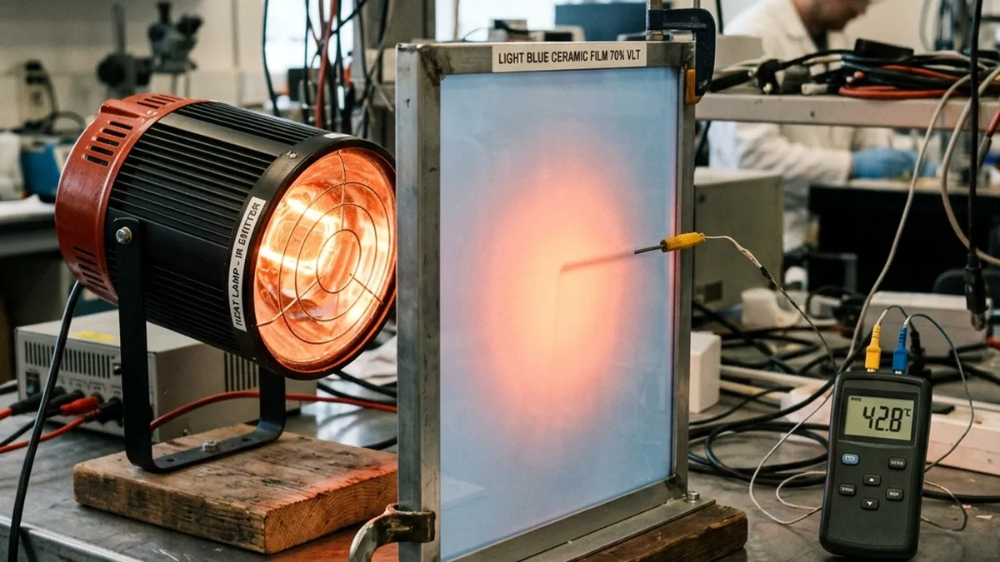

It is the most pervasive myth in the automotive world: "If you want your car to be cooler, you have to get the darkest tint possible." This misconception leads countless drivers to install pitch-black 5% limo tint, sacrificing their nighttime visibility in the hopes of beating the summer heat.
But the truth is, the darkness of a window film (its VLT percentage) has surprisingly little to do with how much heat it actually blocks. Let's dispel the myth and talk about the real science behind heat rejection.
Visible Light vs. Infrared Heat
The sun emits three main types of energy: Visible Light (the glare you see), Ultraviolet Rays (the rays that cause sunburns and faded interiors), and Infrared Radiation (the heat you actually feel on your skin).
When you install a cheap, dark dyed film, you are only blocking the Visible Light. The film essentially acts like a dark sponge, absorbing the sun's energy. Eventually, that sponge gets full and the heat radiates straight into your cabin anyway.

The Magic of Nano-Ceramic Technology
This is where modern technology changes everything. Premium Nano-Ceramic films are engineered to aggressively target and reflect Infrared Radiation. Because they target IR specifically, they do not need to be dark to be effective.
A high-quality 70% ceramic film (which is virtually clear and completely legal on front windshields) will reject vastly more heat than a pitch-black 5% dyed film. You get all the heat rejection, all the UV protection, and absolutely zero compromise on your nighttime visibility. So no, darker is not always better. Smarter is better.